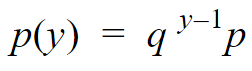
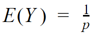
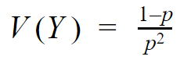
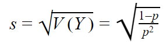

Distribución de Probabilidad Geométrica
Suponga que se efectúa repetidamente un experimento o prueba, que las repeticiones son independientes y que se está interesado en la ocurrencia del éxito de la prueba, siendo la probabilidad de este suceso p. La distribución geométrica permite calcular la probabilidad de que tenga que realizarse un número y de repeticiones antes de obtener un éxito por primera vez; esta probabilidad decrece a medida que aumenta y con lo que la función de masa de probabilidad es siempre decreciente. («Distribuciones de Probabilidad», 2014).
Este tipo de probabilidad se encuentra dado por la formula:
Donde:
p = Probabilidad de que el evento suceda.
q = Probabilidad de que el evento no suceda.
y = En caso de que el evento suceda, denota el intento en el que sucede.
p(y) = Probabilidad de que el evento suceda en el intento numero y.
El comportamiento de este tipo de distribución permite obtener la media "E(Y)", la varianza "V(Y)" y la desviación estándar "s" de la probabilidad calculada a través de fórmulas predefinidas.
  Ejemplo Interactivo
Nota: En el enunciado del siguiente ejemplo encontrara casillas de color amarillo que le permitiran escribir los datos con los que desea realizar el ejercicio.
Enunciado
Un contador público certificado (CPA, por sus siglas en inglés) ha encontrado que de cada compañías auditadas contienen errores importantes. Si el CPA hace auditoría a una serie de cuentas de empresas, ¿cuál es la probabilidad de que la primera cuenta que contenga errores importantes sea la número en ser auditada?. (Wackerly, Mendenhall & Scheaffer, 2008)
Datos
Resultados
Gráfico
Referencias
1. Distribuciones de Probabilidad. (2014). Distribución Geométrica, p 9. Recuperado 8 de enero de 2021, de Servizo Galego de Saúde website: https://www.sergas.es/Saude-publica/Documents/1899/Ayuda_Epidat_4_Distribuciones_de_probabilidad_Octubre2014.pdf
2. Wackerly, D. D., Mendenhall, W., Scheaffer, R. L. (2008). Estadística matemática con aplicaciones (7.a ed.). Ejercicio 3.73, p 119